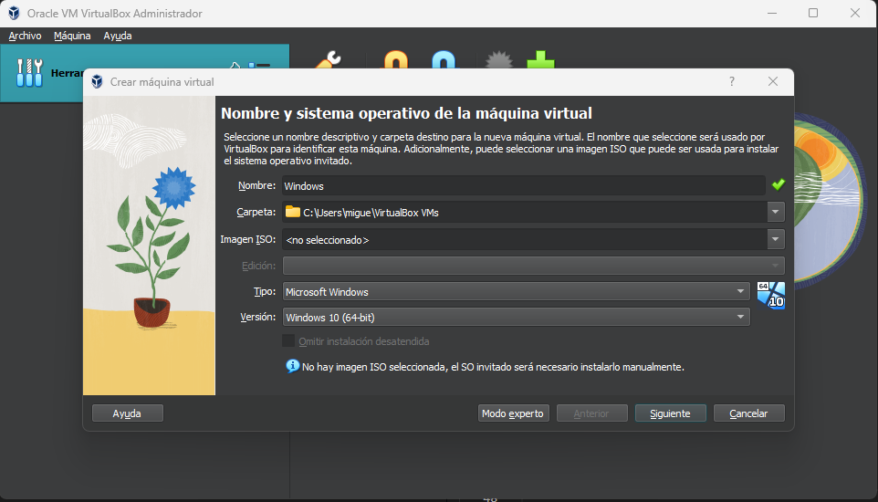
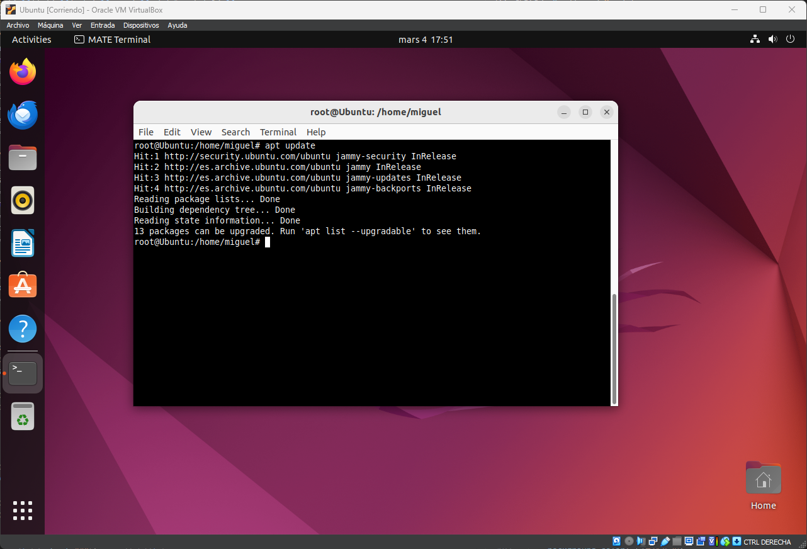

Descarga de las isos necesarias.
Para descargar las isos te dejo dos botones en la parte inferior del texto.
Iso Windows 10:
Para descargar la iso de Windows 10 debemos instalar la herramienta de Microsoft que te dejo en el boton de abajo:
Iso Ubuntu:
Instalacion de las maquinas virtuales.
Para instalar las maquinas virtuales debemos abrir VirtualBox y darle al icono azul donde pone "nueva".
Instalación de la maquina Windows.
Primeros vamos a instalar la maquina Windows para ello le introducimos el nombre y le damos a siguiente.
Y los demas pasos los elegimos según las especificaciones de tu ordenador real, pero puedes dejar la configuración por defecto.
Para añadir la iso iniciamos la máquina y nos pedira una iso. Busca la ruta donde la hayas descargado y la seleccionas, a continuación comenzara la instalación.
Seguimos los pasos predeterminados de la instalación.
Le damos a instalación personalizada y a continuación nos saldra donde queremos instalar el sistema operativo.
Seleccionamos nuevo y le damos a siguiente.
Una vez terminada la instalación podemos eliminar la iso del almacenamiento de nuestra maquina.
Y continuamos la instalación hasta el final.
Y ya tendriamos la maquina instalada.
Instalación de la máquina Ubuntu.
Añadimos la iso a la máquina y al darle a siguiente establecemos un nombre de usuario y una contraseña.
Los siguientes pasos le damos todo a siguiente y esperamos a que se inicie la máquina.
Una vez se instale quitamos la iso del almacenamiento y volvemos a iniciar la máquina.
Configuración de la red NAT.
En las herramientas de virtualbox clicamos en los 3 puntos y clicamos en "Red".
Clicamos en "Redes NAT" y pulsamos en "crear"
A continuación vamos a agregarle esa red NAT a nuestras dos máquinas virtuales.
Configuración de la máquina Ubuntu.
Abrimos la terminal y ponemos "apt Update" y "apt Upgrade" para actualizar los repositorios de la máquina. Puede que sea necesario hacerlo como super usuario, para ello pon "su" e introduce la contraseña de administrador.
A continuación instalamos samba con el comando "apt-get install samba"
Una vez instalado vamos a crear la carpeta que queremos compartir con el comando "mkdir" y la crearemos en "/home/" en tu perfil de usuario.
Y vamos a editar el archivo de configuración de samba para añadir nuestra carpeta, con el comando sudo nano "/etc/samba/smb.conf".
Nos dirigiremos al final del archivo y crearemos una escructura igual a esta con el nombre de tu carpeta y la ruta de la misma.
Una vez ya la hayamos añadido al archivo salimos con las teclas "ctr + x" pulsamos la "Y" y le damos enter.
Ahora crearemos un usuario con el que podran acceder a nuestra carpeta con el comando "smbpasswd -a miguel" sustituyendo miguel por el nombre de tu usuario, y nos pedira una contraseña.
Una vez ya lo hayamos creado, vamos a reiniciar el servicio para aplicar todos los cambios con el comando "/etc/init.d/smbd restart" recuerda siempre hacerlo como administrador o con el comando "sudo" delante.

Por ultimo vamos a crear un archivo de prueba en nuestra carpeta compartida con el comando "touch" en la ruta de nuestra carpeta.
Configuración de la máquina Windows 10.
Para empezar iremos a la configuración de red y clicaremos en centro de redes y recursos compartidos.
Luego pulsaremos en cambiar configuración de uso compartido avanzado.
Y tendrás que tener la configuración como las siguientes imagenes:
Comprobación de las máquinas con ping.
Vamos a hacer un ping desde cualquiera de las dos máquinas para comprobar que se comunican y que estan en la misma red.
Acceder a la carpeta compartida.
Para acceder a la carpeta nos situaremos en nuestra maquina windows y pulsaremos las teclas "win + r" y ponemos la ip de la maquina Ubuntu.
Le damos a aceptar y se nos abrira un explorador de archivos con nuestra carpeta compartida.
Y al abrirla veremos el archivo que creamos en Ubuntu.